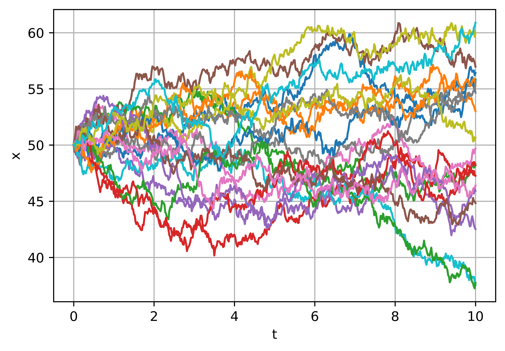
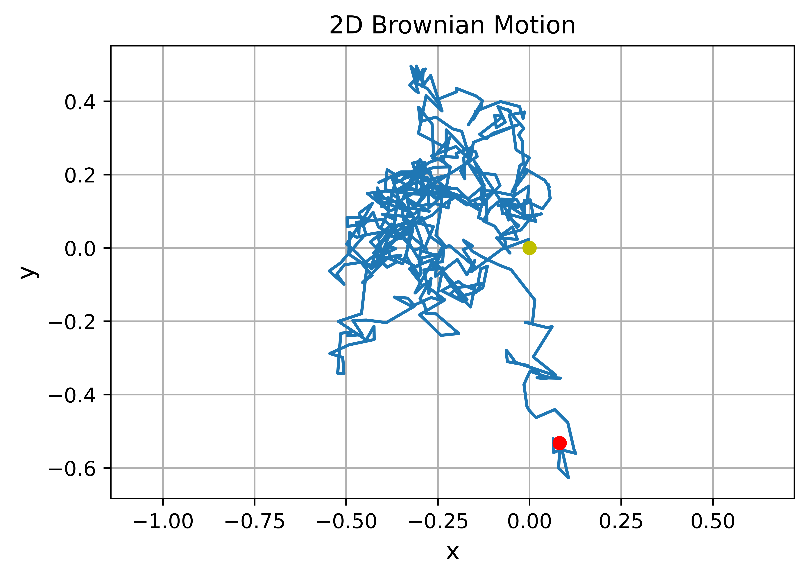

Brownian motion#
One dimensional#
from scipy.stats import norm
# Process parameters
delta = 0.25
dt = 0.1
# Initial condition.
x = 0.0
# Number of iterations to compute.
n = 20
# Iterate to compute the steps of the Brownian motion.
for k in range(n):
x = x + norm.rvs(scale=delta**2*dt)
print(x)
-0.004307407216652883
-0.003952316620095277
-0.009981935587626497
-0.009699319172482526
-0.015193378599948352
-0.0086281716389769
-0.00991265822153842
-0.006839655176219889
-0.015232741163287052
-0.009914522159355073
-0.011255661718110375
-0.012302129011209237
-0.012817182822901447
-0.01323169555649939
-0.023547058598828538
-0.014260749825428354
-0.015410132760080937
-0.019719024311442415
-0.02845248450336236
-0.029035236768124313
"""
brownian() implements one dimensional Brownian motion (i.e. the Wiener process).
"""
# File: brownian.py
from math import sqrt
from scipy.stats import norm
import numpy as np
def brownian(x0, n, dt, delta, out=None):
"""
Generate an instance of Brownian motion (i.e. the Wiener process):
X(t) = X(0) + N(0, delta**2 * t; 0, t)
where N(a,b; t0, t1) is a normally distributed random variable with mean a and
variance b. The parameters t0 and t1 make explicit the statistical
independence of N on different time intervals; that is, if [t0, t1) and
[t2, t3) are disjoint intervals, then N(a, b; t0, t1) and N(a, b; t2, t3)
are independent.
Written as an iteration scheme,
X(t + dt) = X(t) + N(0, delta**2 * dt; t, t+dt)
If `x0` is an array (or array-like), each value in `x0` is treated as
an initial condition, and the value returned is a numpy array with one
more dimension than `x0`.
Arguments
---------
x0 : float or numpy array (or something that can be converted to a numpy array
using numpy.asarray(x0)).
The initial condition(s) (i.e. position(s)) of the Brownian motion.
n : int
The number of steps to take.
dt : float
The time step.
delta : float
delta determines the "speed" of the Brownian motion. The random variable
of the position at time t, X(t), has a normal distribution whose mean is
the position at time t=0 and whose variance is delta**2*t.
out : numpy array or None
If `out` is not None, it specifies the array in which to put the
result. If `out` is None, a new numpy array is created and returned.
Returns
-------
A numpy array of floats with shape `x0.shape + (n,)`.
Note that the initial value `x0` is not included in the returned array.
"""
x0 = np.asarray(x0)
# For each element of x0, generate a sample of n numbers from a
# normal distribution.
r = norm.rvs(size=x0.shape + (n,), scale=delta*sqrt(dt))
# If `out` was not given, create an output array.
if out is None:
out = np.empty(r.shape)
# This computes the Brownian motion by forming the cumulative sum of
# the random samples.
np.cumsum(r, axis=-1, out=out)
# Add the initial condition.
out += np.expand_dims(x0, axis=-1)
return out
import numpy
from pylab import plot, show, grid, xlabel, ylabel
import matplotlib as mpl
mpl.rcParams['figure.dpi'] = 400
import matplotlib.pyplot as plt
%matplotlib inline
%config InlineBackend.figure_format = 'retina'
# The Wiener process parameter.
delta = 2
# Total time.
T = 10.0
# Number of steps.
N = 500
# Time step size
dt = T/N
# Number of realizations to generate.
m = 20
# Create an empty array to store the realizations.
x = numpy.empty((m,N+1))
# Initial values of x.
x[:, 0] = 50
brownian(x[:,0], N, dt, delta, out=x[:,1:])
t = numpy.linspace(0.0, N*dt, N+1)
fig, ax = plt.subplots(figsize=(6, 4))
for k in range(m):
ax.plot(t, x[k])
ax.set_xlabel('t')
ax.set_ylabel('x')
# xlabel('t', fontsize=16)
# ylabel('x', fontsize=16)
grid(True)
show()
# fig.savefig('brownian_motion_1d.pdf', transparent=True, dpi=400)

import numpy
from pylab import plot, show, grid, axis, xlabel, ylabel, title
# The Wiener process parameter.
delta = 0.25
# Total time.
T = 10.0
# Number of steps.
N = 500
# Time step size
dt = T/N
# Initial values of x.
x = numpy.empty((2,N+1))
x[:, 0] = 0.0
brownian(x[:,0], N, dt, delta, out=x[:,1:])
# Plot the 2D trajectory.
fig, ax = plt.subplots(figsize=(6, 4))
ax.plot(x[0],x[1])
# Mark the start and end points.
ax.plot(x[0,0],x[1,0], 'yo')
ax.plot(x[0,-1], x[1,-1], 'ro')
# More plot decorations.
ax.set_title('2D Brownian Motion')
ax.set_xlabel('x', fontsize=12)
ax.set_ylabel('y', fontsize=12)
axis('equal')
grid(True)
show()
# fig.savefig('brownian_motion_2d.pdf', transparent=True, dpi=400)
